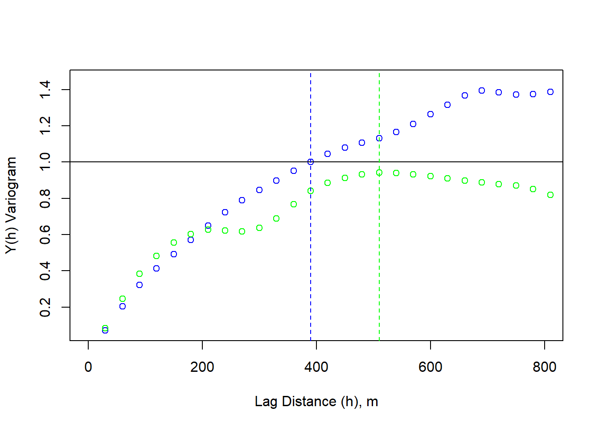

Spatial Autocorrelation
Weylin Gilbert and Cara Piske
Fall 2021
# Import necessary packages
library("rgdal",warn.conflicts = FALSE)
options("rgdal_show_exportToProj4_warnings"="none")
library("sp")
library("raster")
#library("spatstats")
library("gstat")
library(dplyr, quietly = T, verbose =F)
library(mosaic,quietly = T, verbose =F)
# load the raster, sp, and rgdal packages
library(raster)
library(sp)
library(rgdal)
library(ggfortify)
library(tseries)
library(forecast)
#library(imager) # https://www.xquartz.org/
library("usdm")
library(plotrix)
library(png)
library(nlme)An Intro to Spatial Autocorrelation
Here is the download link for the R script for this lecture: spatial autocorrelation script
Correlation is used to determine the relationship between two variables.
- Example: Let variables f and g be evaluated with respect to variable x
- Correlation can be either positive or negative.
- Positive correlation: As f(x) increases, g(x) increases
- Negative correlation: As f(x) increases, g(x) decreases.
- Most intuitive way to examine relationships between variables in science
Reminder… correlation analysis relies on several assumptions:
- linearity between f(x) and g(x)
- independence between f(x) and g(x)
- large sample size
- no relationship between variables and one of its components
- homoscedastity
Autocorrelation is the extent to which a variable varies in conjunction with an offset version of itself.
Temporal Autocorrelation
It can be helpful to think of autocorrelation using standard time-series examples. Time-series show temporal autocorrelation when observations are closely correlated within a time-step (i.e. they don’t display temporal independence).
# Load in the Mauna Loa CO2 data
CO2 <- co2
# Plot the data
plot.ts(CO2, xlab = "Year", ylab = "CO2 Concentrations (ppm)")CO2 is additive with a positive trend through time with an added seasonal effect.
We can decompose the time series using the “decompose” function, which stores seasonal, trend, and irregular components.
Autocorrelation
To look at the autocorrelation of CO2, we shift the CO2 by one time step (one day)
decomposeCO2 <- decompose(co2,"additive")
autoplot(decomposeCO2)The autocorrelation function (ACF) tests for stationarity and shows the correlation between the residuals of an observation and a time-lagged observation (varied magnitude of a time offset with itself). For example, the first sample shows a lag of 0, indicating there is no time offset. We are correlating each value with itself! So, the ACF = 1. At lag = 1, the original CO2 is compared to a new dataset equal to the original shifted by t-1 month. This continues until a lag of 100 months. We can see that as time increases, the ACF decreases, or as time increases observations become less and less similar. We can also see the seasonality here.
ggAcf(CO2, lag=100)We can see that trends it’s important to control for trends and seasonality in time-series analyses. This is also true of spatial analyses.
Spatial Autocorrelation
“Everything is related to everything else, but near things are more related than distant things.” - Waldo R. Tobler’s stated in the first law of geography
Similar to temporal autocorrelation, spatial autocorrelation is the measurement of the potential tendency for similar values to cluster based on proximity. This, too complicates statistical analyses that rely on assumptions of independence of residuals. As a reminder, violations of independence negate the Central Limit Theorem, leading to an underestimation of the error sum of squares and an inflated test statistic. Residuals, thus, are a tool for investigating variation that may exist beyond primary predictors. If data is spatially autocorrelated, residuals can provide insight into the magnitude and location of spatially dependent observations. In summary, statistically, spatial autocorrelation is viewed as a loss of information.
Positive spatial autocorrelation - if a large value is observed at point A, large values will also be observed at the neighboring points.
Negative spatial autocorrelation - if a large value is observed at point A, small values will be observed at the neighboring points. More rare than positive spatial autocorrelation in geographically constrained phenomena.
# example of negative spatial autocorrelation
image(rbind(c(1,0,1),c(0,1,0),c(1,0,1),c(0,1,0),c(1,0,1),c(0,1,0),c(1,0,1),c(0,1,0)))image(rbind(c(1,1,0),c(1,1,0),c(0,0,0),c(0,0,0),c(0,0,0),c(0,1,1),c(0,1,1),c(0,1,1)))When spatial heterogeneity of data increases, it can be hard to determine spatial autocorrelation through visual analytics.
Spatial autocorrelation is ubiquitious in ecological and climatological data.
Examples of data that includes positive spatial autocorrelation:
- Elevation
- Disease clusters/infections
- Election vote margins
Examples of data that includes negative spatial autocorrelation:
- Plant cover in water-limited ecosystems (absent hydraulic uplift)
- Other ecological “competition” scenarios
- Urban decay/suburban sprawl
Example: Burn Severity
Wildfires typically exhibit spatial autocorrelation because of positive feedbacks dictated by geographical, climatological, and hydrological constraints. Fires create a “mosaic” throughout a landscape and burn preferentially depending on antecedent conditions and local topographic factors. Here, we use an example from the Empire Fire which burned a portion of Yosemite National Park in 2017. Overall, the fire was mixed-severity.
An intro to raster data Raster data is gridded, geographically referenced data made up of a matrix of pixels, each containing a value and a spatial reference. Values are often derived from remote sensing technology. In this case, we are utilizing imagery collected by the Landsat satellite. Each pixel contains a spectral signature and, similar to vegetation indices (NDVI), the normalized burn ratio (NBR) takes advantage of spectral bands that highlight vegetation health (near infrared and shortwave infrared). Pre- and post-fire imagery is taken and the NBR is differenced between rasters to calculate the differenced Normalized Burn Ratio (dNBR).
Value Representation
- -500 -> -101*: Enhanced Regrowth post-fire
- -100 -> 99*: Unburned
- 100 -> 269*: Low Severity
- 270 -> 439*: Moderate-low Severity
- 440 -> 659*: Moderate-high Severity
- 660 -> 1300*: High Severity
# load raster in an R object called 'DEM'
dNBR <- raster("dNBR_empire.tif")
# get values
dNBR_values <- getValues(dNBR)
# look at the raster attributes.
dNBR## class : RasterLayer
## dimensions : 306, 339, 103734 (nrow, ncol, ncell)
## resolution : 30, 30 (x, y)
## extent : -2045415, -2035245, 1874025, 1883205 (xmin, xmax, ymin, ymax)
## crs : +proj=aea +lat_0=23 +lon_0=-96 +lat_1=29.5 +lat_2=45.5 +x_0=0 +y_0=0 +datum=NAD83 +units=m +no_defs
## source : dNBR_empire.tif
## names : dNBR_empire
## values : -104, 1013 (min, max)# show the distribution of values in the raster
dNBR_min <- min(dNBR_values, na.rm = TRUE)
dNBR_max <- max(dNBR_values, na.rm = TRUE)
dNBR_mean <- mean(dNBR_values, na.rm = TRUE)
dNBR_sd <- sd(dNBR_values, na.rm = TRUE)
h<-hist(dNBR_values, breaks=seq(dNBR_min,dNBR_max,length = 40),
col=rev(terrain.colors(40)), xlab="difference Normalized Burn Ratio",
main="",
#xlim=my.xlim,
#ylim=c(0,0.001599),
freq=FALSE)
xfit<-seq(dNBR_min,dNBR_max,length=100)
yfit<-dnorm(xfit,mean=dNBR_mean,sd=dNBR_sd)
lines(xfit, yfit, col="black", lwd=2)
boxplot(dNBR_values, horizontal=TRUE, outline=TRUE, axes=FALSE,at=0.0001,
ylim=c(dNBR_min, dNBR_max), col = "white", add = TRUE, boxwex=0.0002)# add a color map with 5 colors
col=terrain.colors(5)
# plot data
plot(dNBR, col=col, main="NdBR", legend = TRUE)This is a lot of data (too much for the R functions to handle), so it can be helpful to subset. The chosen region has relatively low variability in aspect, slope, and elevation.
# Zoom into a smaller sample
x_coord <- c(-2038320, -2036880, -2036880, -2038320) # define cropping extent
y_coord <- c(1880790, 1880790, 1879590, 1879590)
xym <- cbind(x_coord, y_coord)
p = Polygon(xym) # create a polygon with cropping extent
ps = Polygons(list(p),1)
sps = SpatialPolygons(list(ps))
#crop the raster
dNBR_crop <- crop(dNBR, xym)# plot with new cropping extent
# add a color map with 5 colors
col=terrain.colors(5)
# add breaks to the colormap (6 breaks = 5 segments)
brk <- c(1, 2, 3, 4, 5)
plot(dNBR, col=col, main="differenced Normalized Burn Ratio", legend = TRUE)
lines(sps, col= "red", lwd = 3) # add cropping extent# save values to variable
dNBR_cp_values <- getValues(dNBR_crop)# plot only the cropped section
dNBR_cp_min <- min(dNBR_cp_values, na.rm = TRUE)
dNBR_cp_max <- max(dNBR_cp_values, na.rm = TRUE)
dNBR_cp_mean <- mean(dNBR_cp_values, na.rm = TRUE)
dNBR_cp_sd <- sd(dNBR_cp_values, na.rm = TRUE)
h<-hist(dNBR_cp_values, breaks=seq(dNBR_cp_min,dNBR_cp_max,length = 40),
col=rev(terrain.colors(40)), xlab="difference Normalized Burn Ratio",
main="",
#xlim=my.xlim,
#ylim=c(0,0.001599),
freq=FALSE)
xfit<-seq(dNBR_cp_min,dNBR_cp_max,length=100)
yfit<-dnorm(xfit,mean=dNBR_cp_mean,sd=dNBR_cp_sd)
lines(xfit, yfit, col="black", lwd=2)
boxplot(dNBR_cp_values, horizontal=TRUE, outline=TRUE, axes=FALSE,at=0.0001,
ylim=c(dNBR_cp_min, dNBR_cp_max), col = "white", add = TRUE, boxwex=0.0002)# zoom into a smaller sample
# add a color map with 5 colors
col=terrain.colors(5)
#plot(dNBR_crop, col=col, breaks=brk, main="NdBR", legend = FALSE)
plot(dNBR_crop, col=col, main="NdBR", legend = TRUE) Visually, this plot indicates high spatial autocorrelation with clumping patterns in the burn severity data. We can test for spatial autocorrelation in a few ways.
- Variogram plot
- Moran’s Coefficient
Variogram
A variogram plot is used to visualize spatial autocorrelation and quantify where our variance reaches a critical threshold. It is a function of the difference between observations (variance) over a distance.
Null hypothesis is that there is no spatial autocorrelation, or that all observations are independent.
The equation:
\[Y(h) = \frac{1}{2N(h)} (\sum_{\alpha =1}^{N(h)} (z(u_\alpha) -z(u_\alpha + h))^2 \]
Variogram (in this case semi-variogram) is 1/2 the average squared difference of values separated by the lag vector.
Attribute Similarity
Dissimilarity metric -> squared difference between an observation and a neighboring observation
- similar values will have smaller square differences, dissimilar values will have large square differences
Locational Similarity
What is a neighbor?
What is the relationship between an observation and the observations around it? Well, we first have to determine how we define surrounding observations.
Contiguity Based Neighbors spatial contiguity determined based on adjacency
Distance Based Neighbors spatial neighbors based on a distance threshold… distance measured from the center of the pixel.
# convert raster to matrix
dNBR_mat <- as.matrix(dNBR_crop)
dNBR_mat2 <- as.matrix(dNBR)
# choose a point... we'll choose a point in the middle of the matrix
dNBR_midCoor <- c((-2036865-(-2038305))/2 + -2038305, (1880775-1879575)/2+1879575)
dNBR_midPt <- dNBR_mat[20,25]
# plot point
col=terrain.colors(5)
plot(dNBR_crop, col=col, main="Contiguity Rook - sharing a boarder", legend = FALSE)
points(x = dNBR_midCoor[1], y = dNBR_midCoor[2], pch = 15,col = "red")
points(x = dNBR_midCoor[1]+30, y = dNBR_midCoor[2],pch = 0, col = "blue")
points(x = dNBR_midCoor[1]-30, y = dNBR_midCoor[2], pch = 0,col = "blue")
points(x = dNBR_midCoor[1], y = dNBR_midCoor[2]+30, pch = 0, col = "blue")
points(x = dNBR_midCoor[1], y = dNBR_midCoor[2]-30, pch = 0, col = "blue")plot(dNBR_crop, col=col, main="Contiguity Queen - sharing a point", legend = FALSE)
points(x = dNBR_midCoor[1], y = dNBR_midCoor[2], pch = 15, col = "red")
points(x = dNBR_midCoor[1]+30, y = dNBR_midCoor[2], pch = 0, col = "blue")
points(x = dNBR_midCoor[1]-30, y = dNBR_midCoor[2], pch = 0, col = "blue")
points(x = dNBR_midCoor[1], y = dNBR_midCoor[2]+30, pch = 0, col = "blue")
points(x = dNBR_midCoor[1], y = dNBR_midCoor[2]-30, pch = 0, col = "blue")
points(x = dNBR_midCoor[1]+30, y = dNBR_midCoor[2]+30, pch = 0, col = "blue")
points(x = dNBR_midCoor[1]-30, y = dNBR_midCoor[2]-30, pch = 0, col = "blue")
points(x = dNBR_midCoor[1]-30, y = dNBR_midCoor[2]+30, pch = 0, col = "blue")
points(x = dNBR_midCoor[1]+30, y = dNBR_midCoor[2]-30, pch = 0, col = "blue")plot(dNBR_crop, col=col, main="Distance Based", legend = FALSE)
points(x = dNBR_midCoor[1], y = dNBR_midCoor[2], pch = 15,col = "red")
draw.circle(dNBR_midCoor[1],dNBR_midCoor[2],radius = 120, border = "blue")# Convert raster to point values
dNBR_pt <- rasterToPoints(dNBR_crop)
# we can see that we now have a matrix with x = lat, y = lon, and the dNBR classes
head(dNBR_pt)## x y dNBR_empire
## [1,] -2038290 1880760 291
## [2,] -2038260 1880760 304
## [3,] -2038230 1880760 240
## [4,] -2038200 1880760 223
## [5,] -2038170 1880760 315
## [6,] -2038140 1880760 316dNBR_var=usdm::Variogram(dNBR_crop)
plot(dNBR_var, ylab = "Y(h)", xlab = "Lag Distance (h), meters")Brute Force Variogram
First we calculate the Y(h) for one lag distance. The minimum distance cannot exceed the spatial resolution. If we look at the dNBR_crop, we see that that spatial resolution is 30 meters. If we start by simply looking at the lag distance in the x direction, we’re only interested in calculating our Y(h) over each column. The maximum distance, then, would be 30*ncol.
col=terrain.colors(5)
plot(dNBR_crop, col=col, main="NdBR", legend = TRUE)
points(dNBR_pt[1,1],dNBR_pt[1,2],pch = 16, col="red"); points(dNBR_pt[5,1],dNBR_pt[1,2],pch = 16, col="red")
segments(dNBR_pt[1,1], dNBR_pt[1,2], dNBR_pt[5,1],dNBR_pt[1,2], col = "red" )
points(dNBR_pt[20,1],dNBR_pt[900,2],pch = 16, col="red")
points(dNBR_pt[25,1],dNBR_pt[900,2],pch = 16, col="red")
segments(dNBR_pt[20,1], dNBR_pt[900,2], dNBR_pt[25,1],dNBR_pt[900,2], col = "red" )
points(dNBR_pt[40,1],dNBR_pt[1920,2],pch = 16, col="red")
points(dNBR_pt[45,1],dNBR_pt[1920,2],pch = 16, col="red")
segments(dNBR_pt[40,1], dNBR_pt[1920,2], dNBR_pt[45,1],dNBR_pt[1920,2], col = "red" )We can observe how a value changes when shifted by a specified distance and observe that when the lag distance (h) is small, the relationship is relatively linear with little variance. As the lag distance increases, we see more variance.
lag_dis <- 30 # the lag distance we want to test
pixel_dis <- lag_dis/30 # each pixel represents 30 m so this is the number of pixels between desired pixel and lagged pixel
final_pt <- ncol(dNBR_crop) - pixel_dis
variogram_x <- matrix(nrow = nrow(dNBR_mat), ncol = (final_pt))
correlation_vals <- matrix(nrow = nrow(dNBR_mat),ncol = final_pt)
# let's look at the first row
for (i in 1:nrow(dNBR_mat)){
for(j in 1:final_pt){
variogram_x[i,j] <- dNBR_mat[i,j+pixel_dis] - dNBR_mat[i,j]
correlation_vals[i,j] <- dNBR_mat[i,j+pixel_dis]
}
}
n_pairs <- length(variogram_x)
variogram_x2 <- 1/(2*n_pairs)*(sum(variogram_x^2))
plot(dNBR_mat[,1:final_pt], correlation_vals, xlab = "z(u_a)", ylab = "z(u_a +h)")spatial_res <- 30
lag_m <- seq(spatial_res,(nrow(dNBR_mat)*spatial_res-spatial_res), by = 30)
var_num <- 1
variogram <- matrix(nrow = length(lag_m), ncol = 1)
for (lag_dist in lag_m){
lag_dis <- lag_dist # the lag distance we want to test
pixel_dis <- lag_dis/30 # each pixel represents 30 m so this is the number of pixels between desired pixel and lagged pixel
final_pt <- ncol(dNBR_crop) - pixel_dis
variogram_x <- matrix(nrow = nrow(dNBR_mat), ncol = (final_pt))
for (i in 1:nrow(dNBR_mat)){
for(j in 1:final_pt){
variogram_x[i,j] <- dNBR_mat[i,j+pixel_dis] - dNBR_mat[i,j]
}
}
n_pairs <- length(variogram_x)
variogram_x2 <- 1/(2*n_pairs)*(sum(variogram_x^2))
variogram[var_num] <- variogram_x2
var_num <- var_num + 1
}plot(lag_m, variogram, xlim=c(0,600), xlab = "Lag Distance (h), m", ylab = "Y(h) Variogram")Semi-variance is typically reported because it allows us to directly relate the covariance function to the variogram. \[C_x(h) = \sigma^2 - y_x(h) \]
# calculate variance
sigma_s <- apply(dNBR_mat, MARGIN = 1, FUN = function(x) (x - mean(dNBR_mat))^2)
sigma_s <- sum(sigma_s) / (length(dNBR_mat)-1)# standardize Y(h) by the variance
variogram_sig <- variogram/sigma_s
plot(lag_m, variogram_sig, xlim=c(0,600), xlab = "Lag Distance (h), m", ylab = "Y(h) Variogram")
abline(h = sigma_s/sigma_s)The distance where our variogram = total variance (sill), represents the distance where spatial autocorrelation no longer impacts variability. This can be thought of as the distance at which we no longer have information about a starting point. This is relevant in contamination studies, for examples, where we might want to know where we can sample in order to tell information about the contamination source.
# standardize Y(h) by the variance
variogram_sig <- variogram/sigma_s
plot(lag_m, variogram_sig, xlim=c(0,800), xlab = "Lag Distance (h), m", ylab = "Y(h) Variogram")
abline(h = sigma_s/sigma_s)
abline(v = 390, lty = 2)We can then repeat this process in the y-direction.
spatial_res <- 30
lag_m <- seq(spatial_res,(nrow(dNBR_mat)*spatial_res-spatial_res), by = 30)
var_num <- 1
variogramY <- matrix(nrow = length(lag_m), ncol = 1)
for (lag_dist in lag_m){
lag_dis <- lag_dist # the lag distance we want to test
pixel_dis <- lag_dis/30 # each pixel represents 30 m so this is the number of pixels between desired pixel and lagged pixel
final_pt <- nrow(dNBR_crop) - pixel_dis
variogram_y <- matrix(nrow = final_pt, ncol = ncol(dNBR_mat))
for (j in 1:ncol(dNBR_mat)){
for(i in 1:final_pt){
variogram_y[i,j] <- dNBR_mat[i+pixel_dis,j] - dNBR_mat[i,j]
}
}
n_pairs <- length(variogram_y)
variogram_y2 <- 1/(2*n_pairs)*(sum(variogram_y^2))
variogramY[var_num] <- variogram_y2
var_num <- var_num + 1
}# standardize Y(h) by the variance
variogram_sig <- variogram/sigma_s
plot(lag_m, variogram_sig, xlim=c(0,800), xlab = "Lag Distance (h), m", ylab = "Y(h) Variogram", col = "blue")
points(lag_m, variogramY/sigma_s, xlim=c(0,800), xlab = "Lag Distance (h), m", ylab = "Y(h) Variogram", col = "green")
abline(h = sigma_s/sigma_s)
abline(v = 390, lty = 2, col = "blue")
abline(v = 510, lty = 2, col = "green")
The y-direction variogram does not reach the critical threshold (sill), this is considered zonal anisotropy.
Moran’s Number
# Let's simulate some further data to go with NdBR
# We can ensure the simulated data autocorrelates by designating an interpolation appropriately.
set.seed(133)
vgm_sim <- vgm(psil = 0.05, range = 100, model = "Exp")
krige_sim <- gstat(formula = z~1, locations = ~x+y, dummy = TRUE, beta = 1, model = vgm_sim, nmax = 100)
# We need a grid object for populating the simulated data
sample_grid <- as(dNBR_crop, 'SpatialGridDataFrame')
sim_data <- predict(krige_sim, newdata = sample_grid, nsim = 1)## [using unconditional Gaussian simulation]sim_raster <- raster(sim_data)
plot(sim_raster, main = "simulated raster data")Moran(sim_raster)## [1] 0.6765339# Now, let's do a linear regression between our two rasters and see whether the residuals autocorrelate.
# First we need to ensure they share the same extent.
sample_ext <- extent(dNBR_crop)
#sample_ext
sim_ext <- extent(sim_raster)
#sim_ext
setExtent(sim_raster, sample_ext)## class : RasterLayer
## dimensions : 40, 48, 1920 (nrow, ncol, ncell)
## resolution : 30, 30 (x, y)
## extent : -2038305, -2036865, 1879575, 1880775 (xmin, xmax, ymin, ymax)
## crs : +proj=aea +lat_0=23 +lon_0=-96 +lat_1=29.5 +lat_2=45.5 +x_0=0 +y_0=0 +datum=NAD83 +units=m +no_defs
## source : memory
## names : sim1
## values : 0.2612599, 2.031264 (min, max)extent(sim_raster) <- extent(dNBR_crop)
# Regression models between rasters are facilitated by combining them in a RasterStack object.
raster_stack <- stack(dNBR_crop, sim_raster)
names(raster_stack)## [1] "dNBR_empire" "sim1"# We then need to convert this to a dataframe so it will be accepted by the lm() function.
sample_data <- data.frame(na.omit(values(raster_stack)))
# Now we can generate our regression model.
#lm_sample <- lm(sim_raster, dNBR_crop)sample_points_dNBR <- rasterToPoints(dNBR_crop)
sample_points_sim <- rasterToPoints(sim_raster)
subset <- sample(1:333, 100)
sample_points_dNBR <- sample_points_dNBR[subset,]
sample_points_sim <- sample_points_sim[subset]
sample_data_frame <- data.frame(sample_points_dNBR, sample_points_sim)
coordinates(sample_data_frame) <- coordinates(sample_points_dNBR)
#sample_data_frame$
#sample_spdf <- sample_data_frame
#sample_spdf# What implications does all of this have for regression analyses?
lm1 <- lm(sample_points_sim ~ dNBR_empire, data = sample_data_frame)
lm1_raster <- predict(raster_stack, lm1)
plot(lm1_raster, main = "raster prediction from LM1")print("Moran's I value predicted from LM1")## [1] "Moran's I value predicted from LM1"Moran(lm1_raster)## [1] 0.8917046lm1_resid <- raster_stack$sim1 - lm1_raster
plot(lm1_resid, "residuals from LM1")print("Moran's I value for redisuals from LM1")## [1] "Moran's I value for redisuals from LM1"Moran(lm1_resid)## [1] 0.8917192Accounting for Spatial Autocorrelation in Analysis
We now know that our data has some troublesome spatial autocorrelation. What can we do about it? Below we will briefly present some methods for accounting for spatial autocorrelation.
1. Rescaling or Resampling
2. Least Squares
1. Rescaling or Resampling
Spatial autocorrelation is an issue of scale. Aggregation is one potential solution.
# rescale raster by a factor of 2
dNBR_2x <- aggregate(dNBR_crop, fact = 2)
# look at attributes
dNBR_2x## class : RasterLayer
## dimensions : 20, 24, 480 (nrow, ncol, ncell)
## resolution : 60, 60 (x, y)
## extent : -2038305, -2036865, 1879575, 1880775 (xmin, xmax, ymin, ymax)
## crs : +proj=aea +lat_0=23 +lon_0=-96 +lat_1=29.5 +lat_2=45.5 +x_0=0 +y_0=0 +datum=NAD83 +units=m +no_defs
## source : memory
## names : dNBR_empire
## values : -37, 859.25 (min, max)hist(dNBR_2x)# add a color map with 5 colors
col=terrain.colors(5)
plot(dNBR_2x, col=col, main="NdBR", legend = TRUE) dNBR_2x_mat <-as.matrix(dNBR_2x)
sigma_s <- apply(as.matrix(dNBR_2x), MARGIN = 1, FUN = function(x) (x - mean(as.matrix(dNBR_2x)))^2)
sigma_s <- sum(sigma_s) / (length(as.matrix(dNBR_2x))-1)
# plot the variogram
dNBR_var_2x=usdm::Variogram(dNBR_2x)
plot(dNBR_var_2x, ylab = "Y(h)", xlab = "Lag Distance (h), meters")
abline(h=sigma_s)Moran(dNBR_2x)## [1] 0.7638022dNBR_resamp <- resample(dNBR_mat, R = 100, replace = TRUE)
dNBR_resamp_raster <- raster(
dNBR_resamp,
xmn=-2038305, xmx=-2036865,
ymn=1879575, ymx=1880775,
crs=CRS("+proj=aea +lat_0=23 +lon_0=-96 +lat_1=29.5 +lat_2=45.5 +x_0=0 +y_0=0 +datum=NAD83 +units=m +no_defs")
)
# plot
# add a color map with 5 colors
col=terrain.colors(5)
plot(dNBR_resamp_raster, col=col, main="NdBR", legend = TRUE)dNBR_2x_mat <-as.matrix(dNBR_resamp_raster)
sigma_s <- apply(as.matrix(dNBR_resamp_raster), MARGIN = 1, FUN = function(x) (x - mean(as.matrix(dNBR_resamp_raster)))^2)
sigma_s <- sum(sigma_s) / (length(as.matrix(dNBR_resamp_raster))-1)
# plot the variogram
dNBR_var_2x=usdm::Variogram(dNBR_resamp_raster)
plot(dNBR_var_2x, ylab = "Y(h)", xlab = "Lag Distance (h), meters")
abline(h=sigma_s)Moran(dNBR_resamp_raster)## [1] 0.4977632. Least Squares Modeling
gls1 <- gls(sample_points_sim ~ dNBR_empire, data = sample_data_frame)
gls1_raster <- predict(raster_stack, gls1)
plot(gls1_raster, main = "raster prediction from GLS1")print("Moran's I value predicted from GLS1")## [1] "Moran's I value predicted from GLS1"Moran(gls1_raster)## [1] 0.8917046gls1_resid <- raster_stack$sim1 - gls1_raster
plot(gls1_resid, "residuals from GLS1")
print("Moran's I value for redisuals from GLS1")## [1] "Moran's I value for redisuals from GLS1"Moran(gls1_resid)## [1] 0.8917192# Notice that this doesn't actually work differently from the LM, statistically
# To get the GLS method to really work, one needs to specify a correlation geometry. # Linear Correlation Geometry
gls4 <- gls(sample_points_sim ~ dNBR_empire, data = sample_data_frame, correlation = corLin(form = ~y+x, nugget = TRUE), method = "REML")
gls4_raster <- predict(raster_stack, gls4)
plot(gls4_raster, main = "raster prediction from GLS4, Linear correlation")gls4_resid <- raster_stack$sim1 - gls4_raster
plot(gls4_resid, "residuals from GLS4")
print("Moran's I value for redisuals from GLS4")## [1] "Moran's I value for redisuals from GLS4"Moran(gls4_resid)## [1] 0.8910359# Expontential Correlation Geometry
gls6 <- gls(sample_points_sim ~ dNBR_empire, data = sample_data_frame, correlation = corExp(form = ~y+x, nugget = TRUE), method = "REML")
gls6_raster <- predict(raster_stack, gls6)
plot(gls6_raster, main = "raster prediction from GLS6, Exponential correlation")gls6_resid <- raster_stack$sim1 - gls6_raster
plot(gls6_resid, "residuals from GLS6")print("Moran's I value for redisuals from GLS6, Exponential correlation")## [1] "Moran's I value for redisuals from GLS6, Exponential correlation"Moran(gls6_resid)## [1] 0.8910359